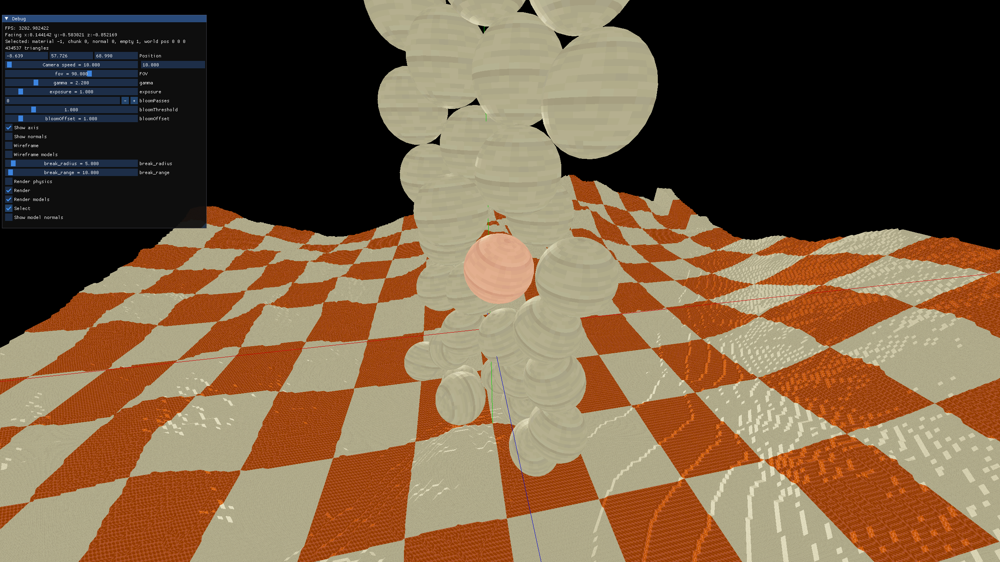
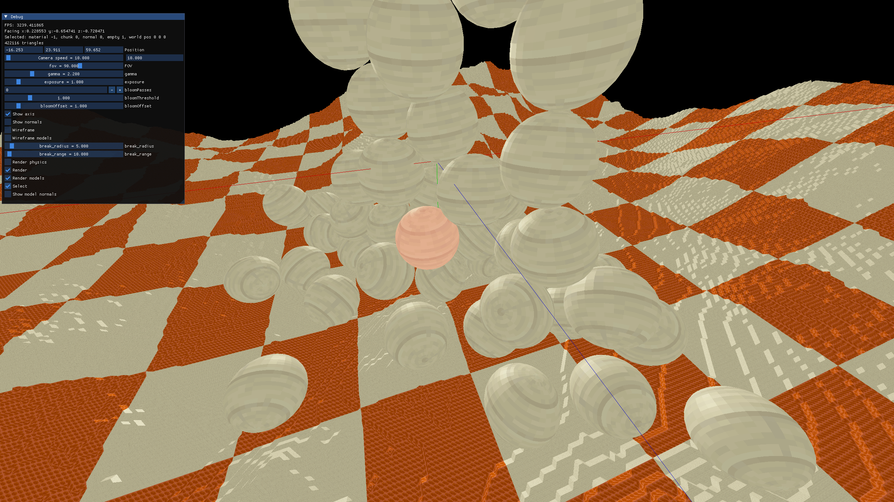
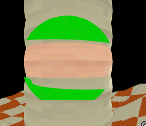

Marching Cubes devlogSelecting entities |
Main page |
| Updated: 9/2024 |
To actually make a game, I need to be able to interact with the entities. I decided a good first step would be to show the player when one or more of them are selected.
But how do I know that the player is actually looking at an entity? I know about a method that involves using a depth buffer or something similar, where you write the ID of the entity in all pixels it takes up. This seems useful for selecting an entity with the mouse, but for now I decided to go with a simpler solution. However, I might implement it in the future, and update this post.
I remember seeing that Jolt Physics (the physics engine I use) had some methods for ray casting in the scene, and I think it makes sense to use the entities’ hitbox instead of the entire model to detect selection. So, that’s what I’ll use.
Jolt enables you to ray cast in the narrow phase, broad phase, inside shapes, using several options and filters, …
These are the features I found the most useful:
RayCast ray {origin, direction_and_len}; // direction_and_len is basically dir * len, if dir is a normalized direction
ClosestHitCollisionCollector<RayCastBodyCollector> collector; // there are other collectors available
physSystem->GetBroadPhaseQuery().CastRay(ray, collector);
return collector.mHit.mBodyID; // return the ID of the body that was hit. it no body was hit, id.IsInvalid() == trueRRayCast ray {origin, direction_and_len}; // RRay and not Ray for some reason
RayCastResult res;
physSystem->GetNarrowPhaseQuery().CastRay(ray, res);
return res.mBodyID;// Custom BroadPhaseLayerFilter that excludes the NON_MOVING layer of the broadphase
class RayBroadPhaseFilter : public JPH::BroadPhaseLayerFilter
{
public:
JPH::BroadPhaseLayer excluded_layer = BroadPhaseLayers::NON_MOVING;
RayBroadPhaseFilter() = default;
virtual bool ShouldCollide(JPH::BroadPhaseLayer layer) const override
{
return layer != excluded_layer; // will only return if the layer is not NON_MOVING
}
};
...
RayBroadPhaseFilter filter;
physSystem->GetNarrowPhaseQuery().CastRay(ray, res, filter);
...Note: In Jolt Physics, you can use a
Body* to access attributes of a body directly. The ray
casting functions return a BodyID. By using the
BodyInterface, you can do anything you could do with a
Body*, or you can actually just get the Body*.
I will not specify if I am using Body* or
BodyID since the functions are the same.
Now that I have the BodyID, what do I do with it? Turns out you can set user data by using SetUserData(uint64), and retrieve it with GetUserData(…). 64 bits is enough to fit an entire pointer on a modern machine, but I just used the entt::entity since it is a 32 bit number.
Now that I know what entity the body belongs to, I add the
Selected component to it. This way, I can iterate over all
selected entities and do whatever I want with them.
However, the other places I use entt now need to ignore selected entities. This can be done by doing, for example,
auto group = registry.group<>(entt::get<Render, Physics>, entt::exclude<Selected>);I was now able to send the selected entities to a different render
function. Here, I make the selected entity red. Only one is selected at
a time, since the Selected component is removed once the
entity is processed.
 
Now I wanted to actually draw an outline around the selected entities. I read somewhere that I should use stencil buffers for this and, like always, the 🐐 has a tutorial.
However, my rendering pipeline is much more complicated. I render many things independently from each other, have an HDR framebuffer that I have to manage and resize manually, …
When trying to implement this, I somehow messed up the GPU memory so bad that I started seeing spots like the screen was dirty, and crashed the entire pc. After fixing that, I had issues clearing the stencil buffer, making everything look extremely buggy:

Finally, I found the right magic combination of OpenGL commands to render things correctly:
// clearing the framebuffer at the start of the frame
// added GL_STENCIL_BUFFER_BIT, and this function to allow writting to all bits, otherwise nothing happens
glStencilMask(0xFF);
glClear(GL_COLOR_BUFFER_BIT | GL_DEPTH_BUFFER_BIT | GL_STENCIL_BUFFER_BIT);
...
// rendering of the selected entities
// setup stencil
glEnable(GL_STENCIL_TEST);
// Configure stencil to write operation
glStencilOp(GL_KEEP, GL_KEEP, GL_REPLACE);
glStencilFunc(GL_ALWAYS, 1, 0xFF); // Always pass the stencil test
glStencilMask(0xFF); // Enable writing to the stencil buffer
draw_objects_like_normal();
glStencilFunc(GL_NOTEQUAL, 1, 0xFF);
glStencilMask(0x00);
glDisable(GL_DEPTH_TEST);
/*
draw the same objects. I decided to draw them slightly bigger using a model matrix,
and a simple shader that outputs a green color. You can also offset the vertices
using the normal.
*/
glm::mat4 model = glm::scale(glm::mat4(1.0f), glm::vec3(1.1f, 1.1f, 1.1f));
draw_objects_with_outline_shader(model)
// cleanup stencil, so that other draw calls don't use it
glDisable(GL_STENCIL_TEST);
glEnable(GL_DEPTH_TEST);This was the result: